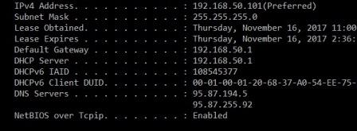
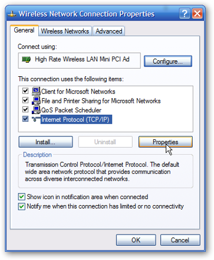
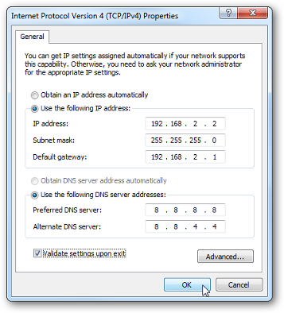

How to Set up Static IP in Windows XP and Windows 7
Static IP means that your computer is assigned an IP address that does not change each time the PC is restarted. It is required in some situations, for example, to access an ftp server or a web server from another computer inside the network. To do this, you need to change the IP version 4 (TCP / IP) properties. First, go to the start menu and type cmd in the search bar. This will open the command prompt window. From the command line type ipconfig/all. You should now see the following screen:

Locate your IP address and write it down as well as the default Gateway (your router internal ip address), the Subnet Mask, and the two DNS server names. In Windows XP go to Control Panel -> Network Connections -> Right click on the Local Area Connection that you use and select Properties. Locate Internet Protocol (TCP/IP) and click on properties. In Windows 7, go to Control Panel -> View Network Status and Tasks -> Change Adapter Settings -> Local Area Connection. Right-click on it andselect propertie, then open Internet Protocol version 4:

You must create an IP address of your choice. It should be the same as the Default Gateway, however, it should be out of the pool of ip addresses used by the router. For example, you could use 192.168.0.12 or 192.168.0.16. Just make sure that the first seven digits of your new IP address are the same as the Default Gateway. Now, go on and adjust your settings with the numbers you have written down from the command line.

Please, before changing anything in your web configuration, make a screenshot with your old settings. In this way, you can always get back if something goes wrong. Wait 5-10 minutes for te changes to take effect. If necessary, restart your PC and the router. Now, check your ip adress in the command prompt. It should have been changed with the one you specified earlier. If you are having trouble with any of these, go back to the initial settings and consult your Internet Service Provider. They should be able to guide you through the whole process.